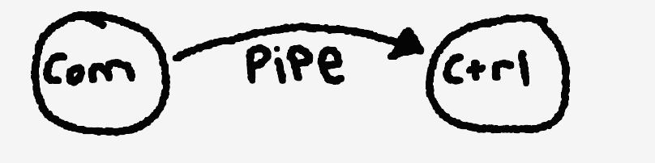

To begin, we needed to define a scope for GUNTHER. What we ultimately wanted was an automatic Nerf blaster mounted with two degrees of motion and a computer vision system that would track human poses, move to center those poses and begin firing. Firing takes place over two steps, first activating a REV pin followed by a shooting pin. This would usually be done through pulling the trigger manually, but we can instead trigger digitally through MOSFETS we added to the internals of the Nerf gun.
From a systems perspective, GUNTHER poses a couple unique problems. We need a system that is constantly tracking and obtaining the most reliable position data, but also a system that is constantly moving appropriately to physically track reliably. As such, I designed the system to be composed of two processes that fork at startup: Commader and Controller. I created them as separate processes because it provides the least amount of coupling and sharing of global state, while also allowing the process to exec and potentially become a completely different process while still holding onto the communication. The two processes use IPC via a unix pipe in order to communicate with one another under a binary protocol designed specifically for GUNTHER.
The Commander is responsible for issuing commands and therefore owns the write end of the pipe. The Controller is managing a state machine that's reading from the read end of the pipe byte by byte. As these bytes affect the state machine and create a single protocol packet, the Controller responds accordingly to the built up packet. These commands can include moving left, right, up or down by a magnitude, beginning to shoot or stopping to shoot.

Process Architecture for GUNTHER controls
The binary packet protocol follows this packet structure:
+----------+--------+--------------+------------------+
| 1 byte | 1 byte | 2 bytes | n bytes |
| 0x72 | Opcode | Payload Len | Payload Data |
+----------+--------+--------------+------------------+
This design is fault tolerant and will be able to recover from any malformed packets, while still allowing quick responses to valid packets and modular expansion capabilities for any new opcode types in the future! The following opcodes currently exist:
+================+=======================+================================================+
| OpCode | Payload Format | Description |
+================+=======================+================================================+
| NoOp | [ no payload ] | Do nothing (default opcode) |
| (0x00) | | |
+----------------+-----------------------+------------------------------------------------+
| Left | [ steps ][ delay ms ]| Move stepper motor left |
| (0x01) | [2 bytes ][ 1 byte ]| - steps: Number of steps (u16 big-endian) |
| | | - delay_ms: Delay between steps in ms (u8) |
+----------------+-----------------------+------------------------------------------------+
| Right | [ steps ][ delay ms ]| Move stepper motor right |
| (0x02) | [2 bytes ][ 1 byte ]| - steps: Number of steps (u16 big-endian) |
| | | - delay_ms: Delay between steps in ms (u8) |
+----------------+-----------------------+------------------------------------------------+
| SetStepperAngle| [ angle (u16) ]| Set Y-axis servo angle |
| (0x03) | [ 2 bytes ]| - angle: Servo angle in degrees (u16) |
| | | (clamped between 130.0-180.0 degrees) |
+----------------+-----------------------+------------------------------------------------+
| StartShoot | [ no payload ] | Start shooting mechanism |
| (0x04) | | - Enables feed, rev, and trigger motors |
+----------------+-----------------------+------------------------------------------------+
| EndShoot | [ no payload ] | Stop shooting mechanism |
| (0x05) | | - Disables trigger, rev, and feed motors |
+----------------+-----------------------+------------------------------------------------+
With this communication protocol in place, the world really is our oyster. We can design any Commander type we want, and as long as it sends these commands through the pipe, it can control our physical robot. This made separation of concerns amazing, as we could test the movement system independently on the Computer Vision
Our computer vision pipeline leverages the ONNX runtime coupled with OpenCV to perform efficient realtime inference on video frames. We use a downscaled version of the YOLOv8n-pose model optimized for speed on our Raspberry Pi 5, achieving the performance needed for realtime tracking and communication back to the Controller. The system calculates the person's position relative to the frame center and sets dynamic thresholds for when to start shooting; moving fewer steps when targets are near center and more aggressively when they're near the edges.
We've implemented basic pose detection that prevents tracking and shooting when someone raises their hands, and the system prioritizes the person closest to the center, ensuring stable operation even when multiple people are detected in the frame simultaneously.
GUNTHER now sits in our living room as a very cool looking piece of art. It's been a true engineering challenge in all realms of Computer Science, Computer Engineering and Mechanical Engineering, and Mason and I truly couldn't be more proud of how it all turned up :)